RDF TRIPLES
Phase 4: Structured Semantic Enrichment
With the gap confirmed, we carried out background research using trusted external sources. We identified the correct location of the painting Madonna col Bambino in gloria con san Pancrazio e una santa monaca as Church of San Sebastiano in Renazzo in Italy — information found via the Italian Wikipedia:
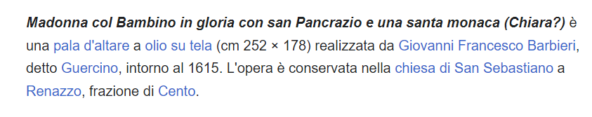We also found the correct material of the painting The Madonna and Sleeping Child: oil on canvas — information found on the Art UK website.
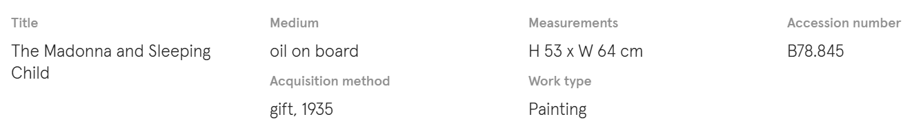Since the paintings already exist in Wikidata as Q134065073 and Q119922630, and we want to enrich these pages with missing metadata, we can now write RDF triples using Wikidata properties in Turtle syntax. Each triple links the artwork (subject) to its enriched property (predicate) and corresponding value (object), following the Wikidata ontology.
4.1. GUERCINO
Unfortunately, we encountered a challenge at this point: the painting Madonna col Bambino in gloria con san Pancrazio e una santa monaca (Q134065073) is located in the Church of San Sebastiano in Renazzo, which had not yet been represented in Wikidata. To address this, we proceed as follows:
STEP 1: Create a new Wikidata item for the church
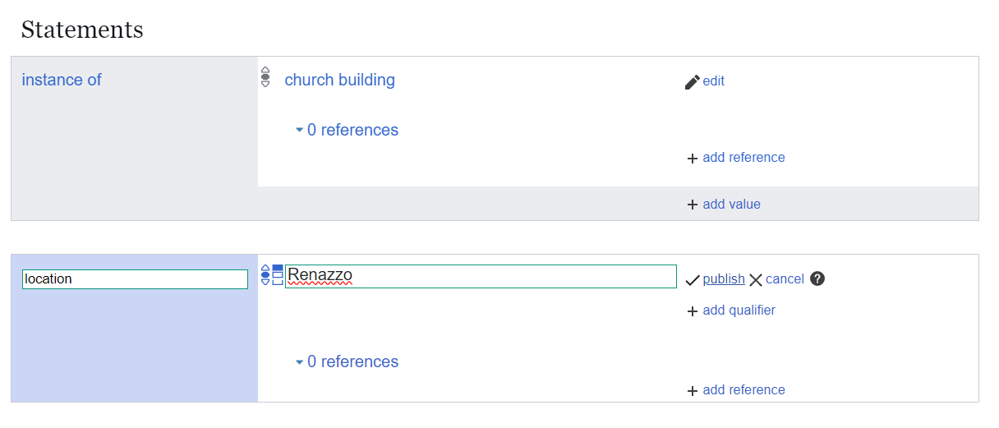STEP 2: Edit the painting to add the location (P276) pointing to this new church
The goal now is to enrich the Wikidata item Q134065073 (Madonna col Bambino in gloria con san Pancrazio e una santa monaca) by adding a new location statement (P276) that links it to the newly created church entity.
We identified the following elements:
- Subject (painting): wd:Q134065073
- Predicate: wdt:P276 (location)
- Object: wd:qnewchurch (newly created church item)
To fill this metadata gap, we constructed RDF triples (with the help of LLM) using the appropriate Wikidata properties and QIDs (entity identifiers).
Our initial prompt referenced the Wikidata ontology but did not use the correct QIDs. We refined it and generated an improved version using Gemini and ChatGPT.
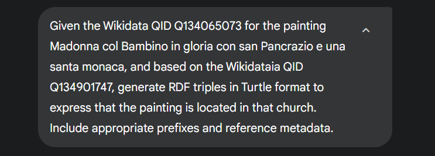The following was suggested by LLMs:
Gemini
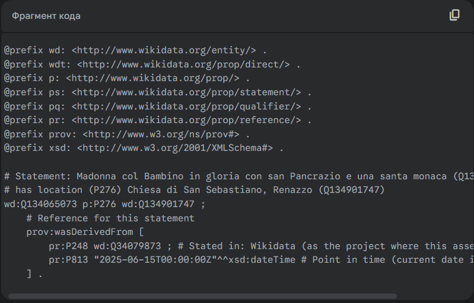Chat GPT
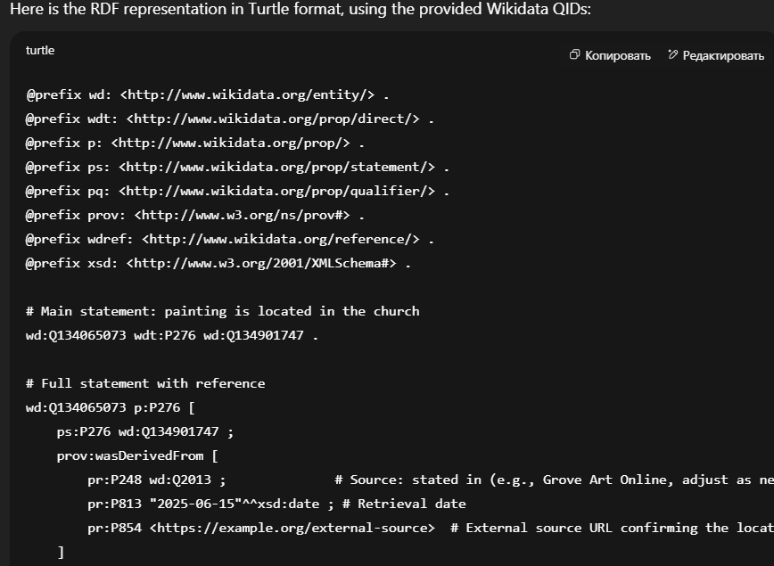STEP 3: Compare LLMs and correct RDF triples
We asked two different LLMs to generate RDF triples in Turtle syntax, both aiming to express the same fact: that the painting Madonna col Bambino in gloria con san Pancrazio e una santa monaca (Q134065073) is located in the Church of San Sebastiano in Renazzo (Q134901747). Each model produced a valid structure, but with slight variations and some inaccuracies in identifiers or syntax.
After reviewing both outputs, we manually corrected and consolidated them into a single, accurate version.
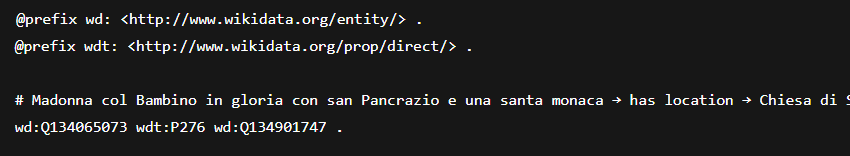To conclude, we represented the painting’s location using RDF triples in Turtle format, adhering to the Wikidata ontology:
- Subject: wd:Q134065073 — the painting;
- Predicate: wdt:P276 — location;
- Object: wd:Q134901747 — the church.
This triple connects the painting Madonna col Bambino in gloria con san Pancrazio e una santa monaca (Q134065073) to its presumed physical location, the Church of San Sebastiano in Renazzo (Q134901747), via the property P276 (location), improving the item’s completeness on Wikidata.
4.2. GUIDO RENI
Since the oil painting already exists in Wikidata as Q174705, and we aim to enrich the painting Madonna and Sleeping Child (Q119922630) with this missing metadata, we can now directly proceed with representing the new information using RDF triples with appropriate Wikidata properties.
STEP 1: Verify the data and prepare
What we’ve done so far:
- Confirmed the painting exists on Wikidata: Q119922630;
- Identified the correct materials: oil paint;
- Created a Wikidata account.
Next step is to manually (or with the help of Quick Statements) add or edit the location data (create RDF triples).
STEP 2: Add the materials to the painting
Our goal is to enrich the item Q119922630 (The Madonna and Sleeping Child) by adding a new material (P186) statement.
Now we have to formulate this missing fact as an RDF triple in Turtle syntax, ready for ingestion or documentation.
We found:
- Subject (painting): wd:Q119922630
- Predicate: wdt:P186 (materials)
- Object: wd:oilpaint (oil paint)
We asked both LLMs to output RDF triples using Wikidata ontology
Gemini
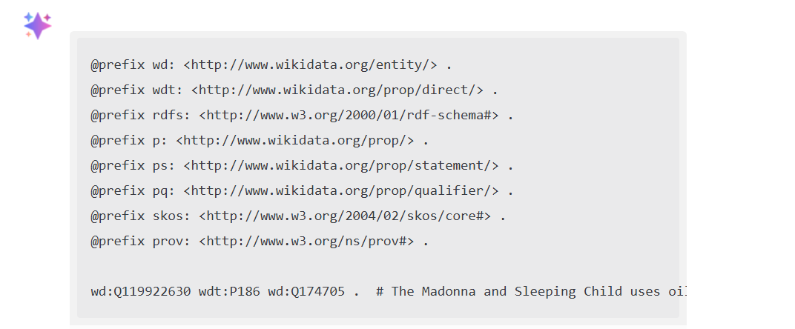Chat GPT
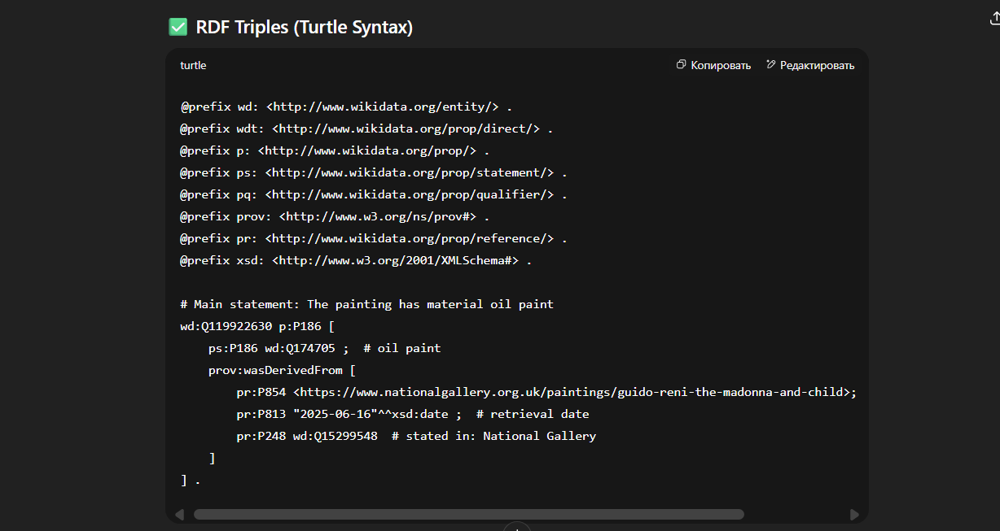STEP 3: Compare LLMs and correct RDF triples
We manually corrected the RDF using verified QIDs.
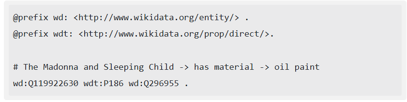 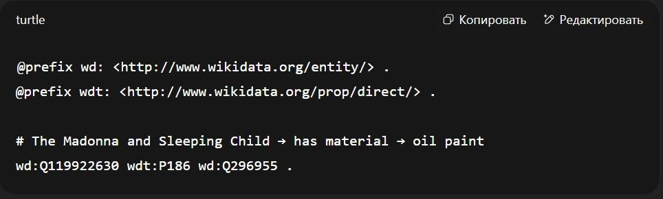In conclusion, we represented the materials of the painting The Madonna and Sleeping Child (Q119922630) using RDF triples in Turtle format. The data links the painting to its presumed materials, the oil on canvas (Q296955), via the property P186 (materials).
OUTCOME
We successfully identified and verified missing metadata related to the painting (e.g., materials and location). By using RDF triples in Turtle syntax, we translated this factual information into a machine-readable format based on Wikidata ontology. Verified QIDs were used to ensure semantic accuracy, and the process demonstrated how structured data can be enriched through a combination of human validation and AI assistance. This approach strengthens the reliability and reusability of cultural heritage data within the semantic web ecosystem.
Visual Representation of RDF triples
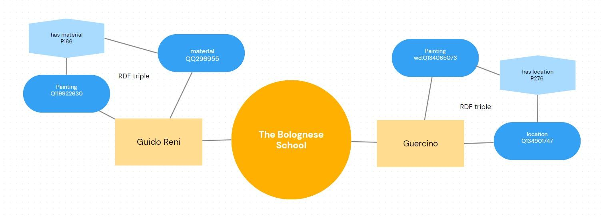